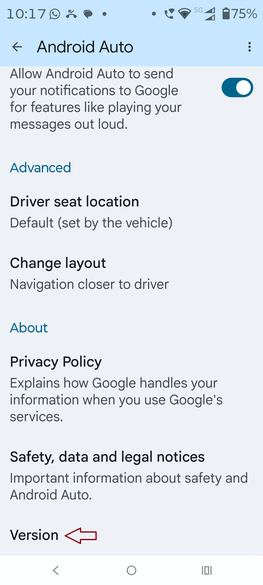
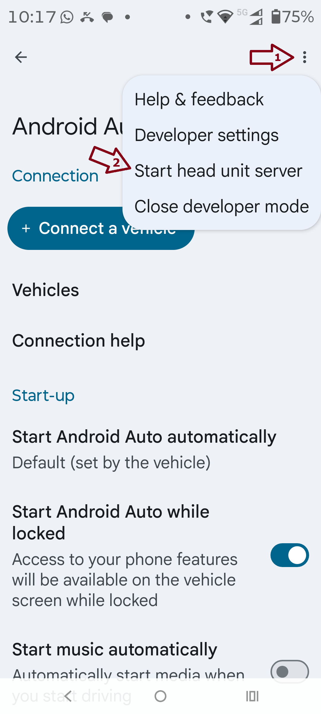
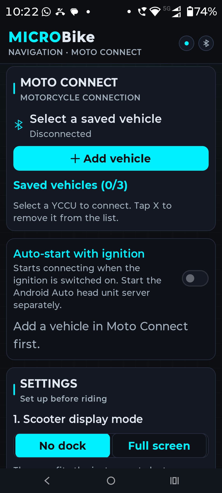

Part 1 · Quick start
1. Requirements, first launch and permissions
Before you begin, make sure you have:
- An Android phone running Android 12 or newer (API 31+).
- Android Auto installed and enabled (pre-installed on most modern Android devices).
- MICROBike installed.
- A Yamaha NMAX 125 Tech Max (2025/2026) with the YCCU / Garmin CCU instrument cluster. You can also test the Android Auto preview on your phone at home without a scooter or Bluetooth.
Safety first: complete all setup, Bluetooth pairing and map centre calibration while stationary.
- Accept the welcome screen. On first launch, read Important information before riding and tap I understand and accept.
- Walk through “App permissions”. MICROBike guides you through each permission one by one. You can allow each permission straight away or tap Skip and change it later in settings.
- Nearby devices for cluster — required to find and connect to YCCU and read the scooter battery voltage.
- Precise location (GPS) recommended — enables GPS speed for Android Auto, ride statistics, the automatic day/night map theme and stationary MENU mode.
- MICROBike notifications Android 13+ — displays persistent notifications for Bluetooth and GPS services with quick stop buttons.
- Phone state and Notification access (OSD) optional — show caller details, call duration and the current track title on the instrument cluster.
- Display over other apps optional — lets you launch routes from the instrument cluster menu (Home, Work, Favourites) while MICROBike runs in the background.

images/01-ekran-powitalny.png
Welcome screen “Important information before riding” with “I understand and accept”.

images/02-uprawnienia-kreator.png
“App permissions” setup wizard (Step 1 of 6 — Nearby devices).
2. Starting the Android Auto developer server
MICROBike receives video directly from the local head unit server built into Android Auto on your phone. You only need to unlock Android Auto developer mode once. Start the head unit server before riding whenever it has been stopped or after a phone reboot.
- Open Android Auto settings from MICROBike. In the top NAVIGATION STREAM card, tap SET. If Android Auto is not installed yet, tap Open Google Play first.
- Enable developer mode (one-time step). Scroll to the bottom of Android Auto settings and tap “Version” 10 times (or “Version and permission info”).
- Confirm the prompt. When Android Auto asks “Allow development settings?”, tap OK.
- Start the head unit server. Tap the ⋮ menu in the top-right corner of Android Auto settings and select Start head unit server. A notification will confirm that the head unit server is running.
- Return to MICROBike. MICROBike automatically detects the server and connects (the header indicator turns cyan and the live map preview appears). If you previously stopped projection manually, tap START.

images/03-aa-przycisk-set.png
“NAVIGATION STREAM” card showing the server guide and the SET button at the bottom.

images/04-aa-ustawienia-wersja.png
Bottom of Android Auto settings with “Version” highlighted (tap 10 times).

images/05-aa-tryb-programisty.png
Android Auto dialog “Allow development settings?” with OK button.

images/06-aa-uruchom-serwer.png
Open ⋮ menu in top-right of Android Auto settings highlighting “Start head unit server”.

images/07-aa-podglad-live.png
Back in MICROBike: live Android Auto map visible in NAVIGATION STREAM with cyan status dot.
Good to know: the Android Auto server runs strictly locally on your phone (127.0.0.1) — no USB cable is needed.
Official Google documentation on the Android Auto head unit server
3. Pairing and connecting the Yamaha instrument cluster
- Pair the scooter in Android settings. Switch on the scooter’s ignition and enable Bluetooth on your phone. In Android’s Bluetooth settings, pair the cluster module whose name starts with YCCU.
- Close competing apps. Close StreetCross (and Yamaha MyRide if you also use battery voltage monitoring), as the cluster only allows one active navigation link at a time.
- Add your vehicle in MICROBike. Open the MOTO CONNECT card and tap + Add vehicle. The phone scans for nearby YCCU devices for up to 15 seconds.
- Select the discovered YCCU. Your scooter is saved to the list (up to 3 vehicles) and MICROBike connects immediately.
- Check the TFT cluster. Once authenticated, the cluster displays the MICROBike waiting screen and switches to live navigation as soon as Android Auto delivers the first frame.

images/08-bluetooth-parowanie-yccu.png
Android system Bluetooth settings showing a paired “YCCU...” device.

images/09-moto-connect-polaczono.png
“MOTO CONNECT” card with a saved YCCU vehicle and green “Connected” status.
Ready to ride! Before your first trip, select your preferred navigation app inside the Android Auto preview (e.g. Google Maps, Waze, Yanosik), test the CENTRE button, and optionally enable Auto-start with ignition.
Part 2 · Full feature guide
Navigation stream and touch calibration
The NAVIGATION STREAM card (LIVE PREVIEW · 1280 × 720) displays the interactive Android Auto interface with full touch support. Two indicators in the top header show connection states at a glance: the dot represents Android Auto and the Bluetooth icon represents the Yamaha cluster (cyan = connected, amber = connecting/retrying, red = error, grey = disconnected).
Controls below the preview
- Full screen
- Expands the interactive Android Auto preview to full screen (supporting touch and screen rotation without dropping the stream). Exit via Close full-screen view.
- ↑ and ↓
- Virtual handlebar buttons supporting the exact same single, double and triple presses and OSD modes as the physical scooter buttons. Ideal for testing your setup while parked.
- BACK
- Sends the Back key followed shortly by a tap on the saved Centre point to return to map tracking.
- MAP
- Brings the navigation app back to the foreground in Android Auto (useful after a phone call or media screen).
- Microphone
- Triggers the Android Auto voice assistant.
- CENTRE
- Taps the saved map centre / compass coordinates.
- Set the map centre point
- Starts one-shot calibration: tap it, then tap the compass / “Re-centre” icon inside the active Android Auto preview. The coordinates are saved automatically. Recalibrate whenever you switch map apps or change DPI.
- START / STOP / SET
- START reconnects to the Android Auto server, STOP manually ends projection, and SET opens Android Auto settings. If an active session drops unexpectedly, MICROBike automatically tries up to 3 times to recover the stream (manual STOP cancels automatic recovery).

images/10-kalibracja-wysrodkuj.png
“NAVIGATION STREAM” card showing the button row (Full screen, ↑, ↓, BACK, MAP, Mic) plus CENTRE and “Set the map centre point”.
Instrument cluster preview and what appears on the TFT
The INSTRUMENT CLUSTER PREVIEW card mirrors the exact frame sent to your Yamaha NMAX TFT screen. Tap the preview to enlarge it to full screen.
- MICROBike waiting screen
- When the cluster is authenticated but Android Auto is not sending video yet (or projection is stopped), the TFT displays the MICROBike splash screen with the current status. It disappears automatically when the first map frame arrives.
- Left-side telemetry bar (power)
- Two live power indicators appear in the left margin, above and below the cluster’s built-in arrows:
- Top — scooter battery voltage, e.g.
14.1V(or white--.-Vwhen no fresh reading is available). - Bottom — phone battery level, e.g.
82%(green at normal level; a yellow lightning bolt appears on the left while charging; white--%when unavailable). - Readings below your warning threshold change colour, and critical conditions flash red every 0.5 s (see Scooter battery & alerts).
- Top — scooter battery voltage, e.g.
- Contextual OSD card (top-right corner)
- Switching handlebar mode to MEDIA or MENU, or receiving/making a CALL, brings up a compact card in the top-right corner showing what ↑ and ↓ currently do. During an active call, the card also shows the live Android microphone state: cyan MIC (unmuted), red crossed-out mic (muted) or grey MIC ? (unknown). Single-press map actions show a 2-second confirmation toast underneath.
- Bottom cluster status bar
- Replaces the stock bottom label with live contextual telemetry (automatically trimmed to the cluster’s character limit):
- MAP and MENU modes: active riding time (
Time:when moving >2 km/h) and average speed (Avg:). Left blank when Phone GPS is off. - MEDIA mode:
[PLAY]or[PAUSE]status and the current track title (requires Notification access). - CALL mode: caller name or number and active call timer, or an incoming call alert.
- Charging fault warning (top priority): when fresh GPS speed exceeds 30 km/h and scooter voltage is below 13.8 V, the bottom bar displays
! NOT CHARGING.with the current voltage.
- MAP and MENU modes: active riding time (

images/11-podglad-licznika-tft.png
“INSTRUMENT CLUSTER PREVIEW” (or photo of Yamaha NMAX TFT) showing map, left voltage/battery bar, top-right OSD card and bottom status bar.
Handlebar controls and contextual OSD modes
The physical ↑ and ↓ handlebar buttons (and the on-screen arrows in MICROBike) use multi-click gestures within a 650 ms window across four contextual modes.
| OSD mode | ↑ (1×) | ↓ (1×) | Auto-return |
|---|---|---|---|
| MAP (default) | Default: Cycle zoom (+ / − / centre)* | Default: Back + centre* | Default mode |
| MEDIA | Next track | Play / Pause | After 20 s idle → MAP |
| MENU (AA Home) | Next item (rotary +1) | Select item | After 60 s idle or when moving → MAP |
| CALL (incoming) | Answer call | Decline call | When ended / declined → MAP |
| CALL (active call) | Mute / unmute microphone | Hang up | When call ends → MAP |
* Single presses (↑ 1× and ↓ 1×) in MAP mode can be customised in settings.
Global gestures (available in every mode)
- ↑ twice (2×)
- Cycles through OSD modes: MAP → MEDIA → MENU → CALL (CALL is included only during an active/incoming call).
- ↓ twice (2×)
- Activates the Android Auto Voice assistant.
- ↑ or ↓ three times (3×)
- Disabled by default (No action). You can assign custom global actions in settings. Note: assigning any action to a triple press adds a 650 ms delay to the matching double press while waiting for a possible third click.
Key control details
- Cycle zoom (+ / − / centre): each press steps through zoom in, zoom out, and back + centre. After 10 seconds without pressing, the cycle resets to zoom in.
- MENU mode (stationary only): for safety, MENU is only available when Phone GPS is on and reports 0 km/h. Entering MENU opens Android Auto Home; moving off, losing GPS, turning GPS off or exiting automatically returns to navigation.
- Customisation (“5. Handlebar buttons”): choose from Zoom in, Zoom out, Cycle zoom, Back, Centre, Back + centre, Map, Android Auto home, Select item, Next/Previous item, Next area, Android Auto calls, Call, End call, Mute microphone, Android Auto media player, Play/Pause, Next track, Pause, Stop or No action. Tap Restore default buttons to reset.

images/12-przyciski-kierownicy.png
“5. Handlebar buttons” panel showing UP/DOWN 1×, 2×, 3× bindings and “Restore default buttons”.
Moto Connect and Auto-start with ignition
Moto Connect (saved vehicles)
The MOTO CONNECT card manages your Bluetooth connection to the Yamaha instrument cluster:
- Save up to 3 YCCU vehicles and reconnect to any saved scooter with a single tap.
- Tapping X removes a vehicle from MICROBike’s list while keeping its Android Bluetooth pairing intact.
- Tapping Disconnect ends the active cluster session (and turns off Auto-start if enabled).
Auto-start with ignition
The Auto-start with ignition card runs a lightweight Bluetooth standby service in the background so MICROBike connects automatically when you switch on your scooter.
- Off by default: select a saved vehicle and toggle the switch on explicitly.
- How standby works: a foreground service with a notification retries roughly every 30 s (max 8 s per attempt). Bluetooth radio events (Bluetooth turning on or a matching YCCU appearing) speed up the next attempt.
- After phone reboot: standby resumes automatically after reboot (once the phone is unlocked), subject to system battery rules. Use Resume standby if standby was halted.
- Head unit server prerequisite: Auto-start re-establishes Bluetooth automatically, but the Android Auto head unit server must already be running. Background projection starts only after YCCU authentication succeeds.
Important: tapping Disconnect turns Auto-start off. Always disable Auto-start before opening Yamaha MyRide or StreetCross so the apps do not compete for the YCCU module.

images/13-autostart-po-zaplonie.png
“Auto-start with ignition” card enabled with a selected YCCU scooter.
Display mode, navigation apps, map theme and DPI
The SETTINGS card lets you tailor how the map looks on the cluster and how navigation apps launch.
- 1. Scooter display mode
-
- No dock (default) — crops out the left Android Auto app dock so the map fills the maximum area of the TFT display.
- Full screen — sends the entire Android Auto screen, including the left app dock, fitted proportionally.
- 2. Maps on the scooter and phone
- Choose the scooter’s navigation app directly inside Android Auto’s menu on the live preview. Optionally toggle Also open the map app on your phone to automatically open a chosen app on the phone when Android Auto connects. Select lists installed supported apps among Google Maps, Yanosik, Waze, Organic Maps, OsmAnd and OsmAnd+ (you can also launch it manually with Open map). This setting applies to the phone only and does not switch the app inside Android Auto.
- 3. Brightness (day / night map theme)
-
- Light — forces the day map theme in Android Auto.
- Dark — forces the night map theme.
- Auto — calculates civil dawn and dusk locally from your last GPS position and phone clock (recalculated immediately and every 10 minutes, fully offline). Requires precise location permission; if no GPS fix is available yet, it defaults to day mode.
- 4. Display density (DPI)
- Choose between 120, 140, 160 (default) and 180 DPI. Higher DPI enlarges text, buttons and UI elements; lower DPI shows more of the map. Releasing the slider briefly reconnects Android Auto to apply the new layout. Check your Centre point calibration after changing DPI.

images/14-ustawienia-obrazu-dpi.png
“SETTINGS” card showing No dock / Full screen, Brightness (Light / Dark / Auto) and Display density DPI slider (120–180).
Home, Work, Favourites and sharing from Google Maps
MICROBike connects the Yamaha cluster’s built-in navigation menu to Google Maps on your phone. All saved addresses remain stored locally on your device.
Quickest way: share directly from Google Maps
- Open any destination or pin in Google Maps.
- Tap Share and choose MICROBike.
- On the PLACE FROM GOOGLE MAPS screen, edit the name or address if needed, then tap Save as Home, Save as Work, Add to favourites (up to 5 places) or Navigate to this place immediately.

images/15-google-maps-udostepnij.png
“PLACE FROM GOOGLE MAPS” screen after Share → MICROBike (Save as Home, Work, Add to favourites, Navigate).
Using saved places from the app and cluster menu
- Home and Work: type addresses manually in Home and work — Google Maps and test them with Ride home / Ride to work. Selecting Home or Work in the Yamaha cluster menu starts the same route.
- Favourite places (up to 5): add a name and address/search query via Add favourite place. Complete entries sync to the cluster’s Favourites menu (distance and bearing are not computed on the cluster list).
- Nearest petrol station: available in both the app and the cluster’s stations menu — triggers a nearby petrol station search in Google Maps.
- Stop route: selecting stop route on the cluster asks Google Maps to exit active navigation.
Tip: grant optional Display over other apps permission so routes selected from the cluster menu can launch while MICROBike runs in the background. If Google Maps already has an active route that cannot be ended automatically, MICROBike will prompt you to end it manually so the new destination is not added as a waypoint.
GPS speed and ride statistics
The GPS speed → Android Auto card uses your phone’s GPS receiver (enabled automatically once precise location is granted; turning Phone GPS off in the app or notification is remembered).
- Speed for Android Auto: fresh readings (≤5 s old) are forwarded to Android Auto so navigation apps can adjust automatic map zoom based on speed. Missing GPS data is never reported as 0 km/h.
- Ride statistics on the cluster bottom bar: tracks active riding time (above 2 km/h) and average speed across all OSD modes (including while in MEDIA or CALL). Reset any time with Reset ride statistics.
- Safety & charging checks: fresh GPS enables stationary MENU mode at 0 km/h and powers the charging fault alert above 30 km/h.
Scooter battery voltage and power warnings
The SCOOTER BATTERY card reads your scooter’s battery voltage (in volts) directly from the CCU via Bluetooth Low Energy — without needing GPS location.
- Automatic polling: once the cluster connects and authenticates in Moto Connect, MICROBike reads voltage after 2 s and refreshes every 30 seconds. Readings stay valid for 10 minutes.
- Manual check: tap Check voltage at any time with a connected vehicle. Requires ignition on and Yamaha MyRide / StreetCross closed.
- Custom warning thresholds: at the bottom of Settings (Instrument cluster power warnings), adjust:
- Phone battery threshold: 10% to 50% in 10% steps (default 20%, when not charging).
- Scooter battery threshold: 12.0 V to 12.5 V in 0.1 V steps (default 12.4 V).
Critical flashing alerts on the TFT
| Condition | Trigger | TFT display behaviour |
|---|---|---|
| Critically low scooter battery | Voltage ≤ 11.5 V | Scooter voltage indicator flashes red (every 0.5 s). |
| Not charging while riding | Fresh GPS > 30 km/h and voltage < 13.8 V | Scooter voltage flashes red and bottom bar shows ! NOT CHARGING. with voltage. |
| Critically low phone battery | Level ≤ 10% (not charging) | Phone battery indicator flashes red (every 0.5 s). |
| Normal / charging | Above warning thresholds | Steady readout; phone battery shown in green (with yellow lightning icon while charging). |

images/16-gps-i-akumulator.png
“GPS speed → Android Auto” card (live speed + Reset ride statistics) and “SCOOTER BATTERY” card showing voltage in V.
App permissions, language and privacy
Review or change any permission at any time under App permissions (Manage permissions).
| Permission | Purpose | What still works without it |
|---|---|---|
| Nearby devices | Finding and connecting to the Yamaha YCCU cluster, Auto-start and battery voltage checks. | The Android Auto preview still works on your phone. |
| Precise location (GPS) | GPS speed for Android Auto, ride statistics, Auto day/night theme, stationary MENU mode and charging fault alert. | Map projection and cluster link work normally; Light/Dark theme can be chosen manually. |
| MICROBike notifications (Android 13+) | Persistent notifications for Bluetooth and GPS services with stop buttons. | Services can still run, without notifications in the Android shade. |
| Phone state | More accurate detection of ringing and active calls on the cluster. Does not access contacts or call history. | MICROBike falls back to detecting calls from the phone’s audio mode. |
| Notification access (OSD) | Displays caller name/number, track title and play/pause status on the cluster. | CALL and MEDIA modes still work with generic labels. |
| Display over other apps | Launches routes from the cluster menu (Home, Work, Favourites) while MICROBike is in the background. | Cluster connection and starting routes while MICROBike is open work normally. |
Privacy and app language
- Local by design: GPS coordinates are never stored, and caller/track metadata stays in volatile memory only while the app runs.
- App language: MICROBike currently offers English and Polish interfaces (additional app languages are planned). On Android 13 and newer, change the app language in Android settings (Settings → Apps → MICROBike → Language).
Part 3 · Support
Troubleshooting
Android Auto preview does not appear or stays stuck connecting
Check that the head unit server is running in Android Auto (Android Auto settings → ⋮ → Start head unit server). If it was already running, select Stop head unit server, start it again, return to MICROBike and tap START.
MICROBike cannot find or connect to the YCCU cluster
Verify four things: the scooter ignition is on, YCCU is already paired in Android’s Bluetooth settings, MICROBike has Nearby devices permission, and both StreetCross and Yamaha MyRide are completely closed. Then retry in MOTO CONNECT.
Projection stops after turning off the screen (especially Xiaomi / MIUI / HyperOS)
Aggressive OEM battery savers can put Android Auto or MICROBike to sleep shortly after the screen locks:
- Open phone Settings → Apps → Android Auto (App info).
- If Background autostart is available, turn it on.
- Open Battery saver / Battery and choose No restrictions.
- If the system also stops MICROBike (e.g. during Auto-start standby), repeat the same steps for MICROBike.
Exact menu names vary slightly across MIUI, HyperOS and other manufacturers (Samsung, Huawei, OnePlus).

images/17-xiaomi-bateria.png
Android Auto / MICROBike app settings on Xiaomi: Autostart enabled and Battery set to “No restrictions”.
Centre or Back + centre misses the button on the map
Different navigation apps and DPI settings place the re-centre button in different spots. While stationary, open the map in MICROBike’s preview, tap Set the map centre point and tap the middle of the compass/centre icon inside the active map area (avoiding black margins).
Cannot switch the handlebar to MENU (AA Home) mode
MENU mode is intentionally blocked while moving and requires all three conditions: precise location permission granted, Phone GPS switched on, and a fresh 0 km/h GPS reading. Indoors or in an underground garage without a GPS fix, MENU stays unavailable.
Caller name or song title is missing on the cluster
Open App permissions → Manage permissions and enable Notification access (OSD) for MICROBike. Enabling Phone state also improves call detection.
Scooter battery voltage check fails or times out
Ensure the ignition is on and a vehicle is connected in MOTO CONNECT. Close Yamaha MyRide and StreetCross completely (another app may hold the CCU BLE link), then tap Check voltage.
Home / Work / Favourite adds a stop instead of starting a new route
When Google Maps already has an active route and cannot clear it automatically, end the current navigation manually in the Android Auto preview or in Google Maps, then select your new destination again.
How to report a bug or send feedback
At the bottom of MICROBike’s main screen, tap Report a bug to the developer. Describe (up to 1,500 characters) what you tried to do, what happened and when it occurs — including your phone model and Android version helps. Only the text you type is sent (no logs or vehicle data); never include passwords or personal data.
Privacy Policy — MICROBike
Effective date: November 27, 2026
MICROBike (“the App”) is an independent utility application built for motorcycle and scooter riders. We respect your privacy: the App does not require user accounts, contains no ads, uses no analytics or tracking SDKs, and does not collect personal profiles or ride histories.
1. Local-Only Processing on Your Device
All core features of MICROBike operate locally on your Android smartphone. Your GPS coordinates, ride statistics, saved places (Home, Work, Favourites), and scooter Bluetooth identifiers stay strictly on your device.
2. Android Permissions and Purpose
- Nearby Devices (Bluetooth): Used solely to connect to your scooter’s compatible instrument cluster (YCCU) to display navigation frames, ride telemetry, and battery voltage.
- Precise Location (GPS — optional): Processed strictly in real time in volatile memory to forward current speed to Android Auto, calculate trip duration and average speed, verify stationary (0 km/h) status for menu safety lock, and compute local sunrise/sunset for automatic day/night map themes. Coordinates are never saved to disk or transmitted.
- Notifications (Android 13+ — optional): Used only to display local foreground service status notifications while Bluetooth or GPS services are active.
- Notification Access & Phone State (optional): Used locally in memory to display incoming caller details and currently playing media track titles on the instrument cluster OSD. The App never reads your contacts or call logs, and never stores notification content.
- Display Over Other Apps (optional): Used only to launch navigation intents to your chosen map app when triggered from the scooter handlebar menu while MICROBike runs in the background.
3. Voluntary Bug Reports
If you choose to use the optional “Report a bug to the developer” feature inside the App, only the text message you explicitly type (up to 1,500 characters) is transmitted so the developer can investigate the issue. No automatic diagnostic logs, GPS coordinates, or vehicle identifiers are attached. Please do not include personal data or passwords in bug reports.
4. Third-Party Applications
MICROBike interacts locally on your device with Android Auto and installed navigation applications (such as Google Maps, Waze, or Yanosik). Your use of those third-party applications is governed by their respective privacy policies.
5. Data Retention and Deletion
All App settings and saved destinations are stored locally in Android app storage. You can delete all local data at any time by clearing the App’s storage in Android system settings or uninstalling the App. If you sent a voluntary bug report and wish to have that message deleted, contact us using the email below.
6. Children’s Privacy
MICROBike is intended for adult riders (18+) and is not directed at children.
7. Contact
Developer: Robert Ambroziewicz
Contact email: rambro@o2.pl
Disclaimer: MICROBike is an independent community project and is not affiliated with, endorsed, or sponsored by Yamaha Motor Co., Ltd., Google LLC, or Garmin Ltd.